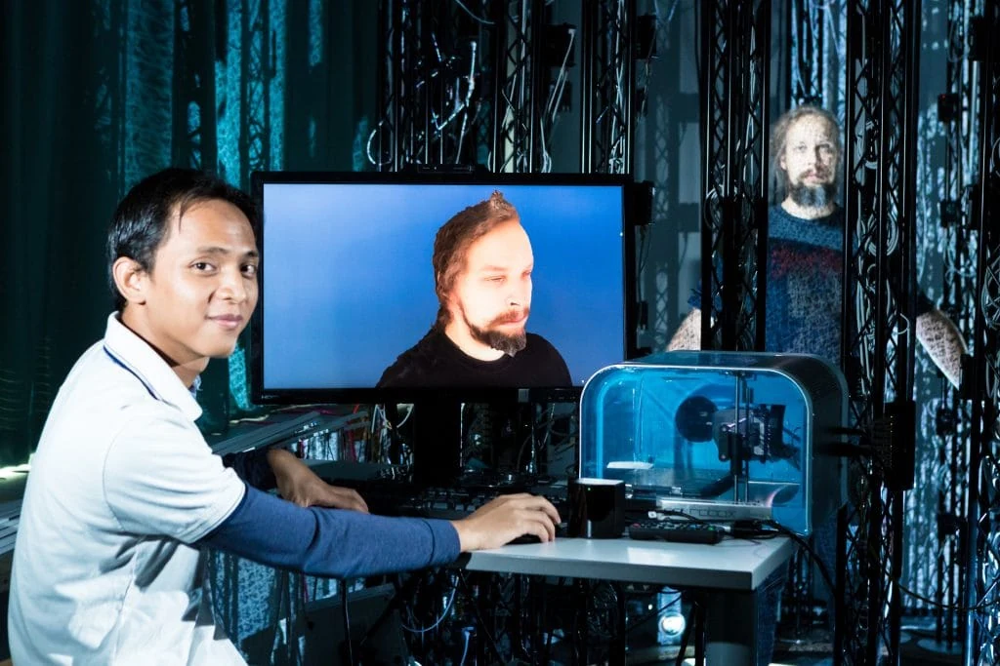

Immersive robotic telepresence
Connecting remote spaces through robotics and immersive video.
I’m Adhi. I build robotic systems and immersive experiences, bringing together software, hardware, and a hands-on approach to research.

My background spans mechatronics, electrical engineering, and immersive technology. I’ve worked on humanoid robots, wearable motion tracking, and VR telepresence—from designing components to integrating systems and studying how people use them.
I enjoy the point where disciplines meet: making a mechanism work, connecting it to software, and turning it into something people can experience.
Explore my experience →Let’s talk about robotics, immersive technology, and the work ahead.